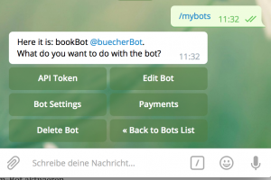
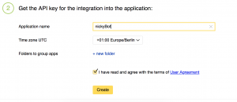

Wie entwickelt man einen Amazon-Bot für Telegramm?
Was ist ein Telegramm-Bot?
Schon mal was von Telegramm gehört oder gar einem Telegramm-Bot gehört? Nein? Macht nichts. Telegramm ist ein Messenger, wie Whatsapp oder Threema. Der große Vorteil von Telegramm gegenüber Whatsapp ist die Plattforum-Unabhängigkeit. Es gibt nicht nur Apps für Android und iOs, auch unter OS X (Mac) und Windows lässt sich Telegramm unkompliziert nutzen. Bei Whatsapp war das bisher nur über den Browser möglich, Threema bietet diese Möglichkeit gar nicht an.
Außerdem bietet Telegramm ein sehr umfangreiche API an, die noch dazu sehr gut dokumentiert ist. Damit lassen sich sogenannte Telegramm-Bots entwickeln. Diese Bots können dann von den Nutzern mit @einBot angesprochen werden, um alle Möglichen Aufgaben auszuführen. Einer der bekanntesten ist vermutlich der @gif-Bot, der die Plattform giphy.com durchsuchen kann und die Ergebnisse in den Chat-Verlauf schicken kann. Und diese Art von Bots lassen sich auch selber entwickeln und anbieten. Unter anderem auch mit PHP.
Wer die Kommunikation mit Telegramm nicht komplett von vorne aufbauen will, kann auf eine Bibliothek von Longman auf github.com zugreifen. Für meinen Geschmack ist diese leider etwas zu schlecht dokumentiert und mitunter etwas durcheinander organisiert. Noch dazu wird sie offenbar nur sporadisch betreut. Dennoch gibt es ein relativ großes Repository mit Beispielen, was definitiv sehr hilfreich ist. Etwas verwirrend sind die beiden Repositories, die da Core und Manager heißen. Der Manager ist nur eine Art Wrapper für das Core-Repository. Dessen Nutzung erleichtert die Einrichtung und Entwicklung des Bots um ein vielfaches und bietet z.B. eine zentrale Datei (manager.php) an, um alle Funktionen zu steuern. Beim Core werden die jeweiligen Bot-Funktionen über verschiedene Dateien gesteuert.
Was ist das Ziel?
Was ist also der Plan? Wir bauen uns einen Telegramm-Bot, mit dem sich Amazon nach Produkten durchsuchen lässt. Das Ergebnis wird in einem Grid dargestellt. Wählt man ein Element aus, erscheint es mit Link zum Produkt im Chat-Verlauf. Und mit einer Analytics-Plattform soll das ganze
Um deinen eigenen Bot betreiben zu können brauchst du natürlich erstmal Telegramm und außerdem einen Web-Server und eine Domain für die du ein SSL-Zertifikat einrichten musst. Außerdem solltest du composer installiert haben und so ungefähr wissen, wie man damit umgeht.
Anmelden eines Bots
Zunächst musst du deinen neuen Telegramm-Bot anmelden. Dazu nutzt du den BotFather (BotFather). dem du mit dem Befehl /newbot dazu bringen kannst, einen neuen Bot zu registrieren. Zuerst wird ein Name für den Bot verlangt - das ist allerdings noch nicht der Name, mit dem der Bot später auch angesprochen wird. Das ist erst der sogenannte username, der im 2. Schritt verlangt wird. Ich nenne meinen Bot @buecherBot.
Leider gibt es hier eine Restriktion: Der Name muss mit bot enden. Wer einen kurzen Namen wie @gif oder @youtube nutzen möchte, muss dazu vermutlich etwas mehr Aufwand betreiben. Als nächstes rufst du die Einstellungen des Bots auf, indem du das Inline-Menü mit /mybots öffnest.
Für unseren Bot solltest du zunächst den Inline-Mode aktivieren. Damit kannst du den Bot im Textfeld direkt ansprechen. Das gehst du über den Punkt Bot-Settings zum Inline-Mode und aktivierst diesen.
[caption id=“attachment_1655” align=“aligncenter” width=“300”] 
{kind=link}
Schließlich kannst du Allow Groups auf Nein setzen und die Group Privacy aktivieren. Da der Bot noch nicht in Gruppen aktiv sein soll, muss er weder Mitglied von Gruppen sein noch deren Nachrichten mitlesen.
Als nächstes lässt du dir den API-Schlüssel anzeigen, damit du auch von außen mit dem Bot kommunizieren kannst. Der API-Schlüssel befindet sich im obersten Menü und ist folgendermaßen aufgebaut:
123123123:128390123jKF19082_1293123123
Das war es, was die Vorbereitung angeht. Weiter geht es mit PHP und einer kleinen Bot-Logik.
Dem Bot mit PHP Leben einhauchen
Als Library bzw. Framework nutzen wir das Telegram-Bot-Repository von Longman bzw. den dazugehörigen Manager, eine Art Wrapper, der die Steuerung etwas erleichtert.Damit du für den ersten Start bereits eine gute Grundlage hast, solltest du dir die Beispiel-Dateien von github herunterladen. Auf der github-Seite wird zwar die Einstellung für die composer.json vorgegeben, allerdings hat der checkout damit bei mir nicht funktioniert. Mit folgenden Parametern klappte es dann:
{ “require”: { “php-telegram-bot/telegram-bot-manager”: “^1.2”, “longman/telegram-bot”: “0.52 as 0.48” } }
Nachdem composer alle Abhängigkeiten heruntergeladen hat (composer install), muss man sich in der manager.php an die Grundeinstellungen machen. (Es kann passieren, dass du auf deinem System einige PHP-Module installieren musst. Composer wird dir die Namen der Module allerdings nennen. Du kannst sie dann relativ unkompliziert mit z.B. apt-get install php7.0-b_cmath php7.0-curl herunterladen und aktivieren.) Außerdem werde ich ein paar Änderungen an der Datei InlinequeryCommand.php_ aus dem Ordner Commands aus dem Beispiel-Repository vornehmen.
Aber zuerst zur manager.php. Hier solltest du die folgenden Einstellungen vornehmen:
-
bot_username - der Benutzername deines Bots, ohne das führende @
-
api_key - der API-Schlüssel, den dir der Bot-Father gegeben hat
-
secret - ein selbst erzeugtes Passwort um die Datei vor Zugriffen von außen zu schützen - die PHP-Datei liegt ja auf deinem öffentlichen Server und kann theoretisch von überall aufgerufen werden.
-
webhook->url - hier trägst du die URL zur manager.php-Datei ein, also https://telegramm.example.com/manager.php
-
commands->paths - diese Zeile muss auskommentiert sein und zu einem Pfad verweisen, der deine Bot-Commandos enthält. Wenn du dich an dem Bot-Example orientierst, sieht diese Einstellung so aus:
'commands' => \[ // Define all paths for your custom commands 'paths' => \[ \_\_DIR\_\_ . '/Commands' \]
Als nächstes kannst du noch ein paar zusätzliche Änderungen vornehmen, die aber für die Funktion des Bots nicht wichtig sind:
- max_connections - offensichtlich die Anzahl der maximal zulässigen Verbindungen
- logging - diese Zeilen kannst du aus-kommentieren, um das Logging zu aktivieren, gerade in der Anfangsphase ist das ganz nützlich
- limiter - die Telegram-API lässt natürlich nur eine begrenzte Anzahl von Anfragen zu, um das eigene System zu schützen, offenbar bringt das Framework eine Funktion mit, um das Erreichen des Limits bestmöglich zu vermeiden - wie das funktioniert, kann ich nicht sagen, da dazu auch nicht mehr in der Doku steht, ich hab es erstmal aktiviert
Grundsätzlich war es das erstmal, was die Voreinstellungen betrifft. Jetzt kannst du den sog. webhook aktivieren. Dazu rufst du die manager.php im Browser auf, wie z.B.
https://telegramm.example.com/manager.php
Den Zugriff von außen beschränken
Wenn du alles richtig gemacht hast, erscheint jetzt erstmal ein Fehler. Und das ist auch gut so - denn schließlich soll der Zugriff von außen ja nicht jedem gewährt werden.
Fatal error: Uncaught TelegramBot\TelegramBotManager\Exception\InvalidAccessException: Invalid access in …
Also packst du noch das secret-Token an die URL, dass du weiter oben in der manager.php angegeben hast (nicht den API-Schlüssel von Telegramm!). Und damit du auch eine Aktion auslöst, setzt du erstmal den webhook mit dem Parameter a=set:
https://telegramm.example.com/manager.php?s=123123123&a=set
Dein Webhook für den Bot ist nun aktiv. Da du in der manager.php außerdem schon den Ordner commands freigegeben hast, kann der Bot nun schon auf Inline-Anfragen antworten. Im Telegramm-Client kannst du nun deinen Privat-Chat öffnen (“Gespeichertes”) und den Telegramm-Bot mit @buecherBot ansprechen. Der Bot sollte nun, wenn alles korrekt eingerichtet, so antworten, wie es in der Datei InlinequeryCommand.php vorgegeben ist. Nämlich mit einer sehr einfache 3-zeiligen Liste.
Um nun ein Ergebnis von der Amazon API als Bilder-Liste darzustellen, habe ich InlinequeryCommand.php ein wenig angepasst. Zuerst benötigen wir die entsprechende Klasse, um nicht nur mit Text sondern auch mit Bildern zu antworten:
use Longman\TelegramBot\Entities\InlineQuery\InlineQueryResultPhoto;
Außerdem habe ich den Aufbau des Antwort-Objektes etwas vereinfacht (ich werde hier nicht weiter ins Detail gehen, auf $this->apiResult gehe ich später ein).
foreach ($this->apiResult->items as $item) {
$this->inlineQueryResult[] = new InlineQueryResultPhoto(array( ‘id’ => sizeof($this->inlineQueryResult), ’title’ => ‘Search: ’ . $query, ‘description’ => ‘Info: ’ . $information, ’thumb_url’ => $thumbUrl, ‘photo_url’ => $imageUrl, ‘caption’ => $linkUrl ) );
}
$data[‘results’] = ‘[’ . implode(’,’, $this->inlineQueryResult) . ‘]’;
return Request::answerInlineQuery($data);
Grundsätzlich war es das schon. Du kannst nun noch alle möglichen anderen Funktionen des Bots nutzen. Schau dir dazu einfach den Commands-Ordner des Example-Repository an. Die Auswahl ist sehr groß, für meine Zwecke soll es aber erstmal bei der Inline-Query bleiben.
Eine Suchanfrage zu Amazon schicken
Natürlich soll derTelegramm-Bot nun auch in der Lage sein, Anfragen der Benutzer zu Amazon zu schicken und mit einem vernünftigen Suchergebnis zu antworten. Zunächst benötigt man dafür einen Partner-Account bei Amazon. In den Einstellungen kann man sich dann ein Schlüsselpaar erstellen um die Suchanfragen zu authentifizieren. Und auch für die Suchanfrage selber gibt es eine PHP-API, nämlich apai-io von exeu. Die Einrichtung und der Aufbau sind relativ einfach. Nachdem composer die notwendigen Dateien heruntergeladen hat, packt man - wie üblich - ein paar Zeilen in eine PHP-Datei und hat die erste Anfrage an die Amazon-API fertig:
<?php ini\_set('display\_errors', 1);
require\_once \_\_DIR\_\_ . '/vendor/autoload.php';
define('AWS\_API\_KEY', 'AKAKAKAKAKAKAKA');
define('AWS\_API\_SECRET\_KEY', 'KALSKDLASKDLASDKLASDKLASKLDKASLDASDL
define('AWS\_ASSOCIATE\_TAG', 't0000-21');
use ApaiIO\\Configuration\\GenericConfiguration;
use ApaiIO\\Operations\\Search;
use ApaiIO\\ApaiIO;
$conf = new GenericConfiguration();
$client = new \\GuzzleHttp\\Client();
$request = new \\ApaiIO\\Request\\GuzzleRequest($client);
$conf
->setCountry('de')
->setAccessKey(AWS\_API\_KEY)
->setSecretKey(AWS\_API\_SECRET\_KEY)
->setAssociateTag(AWS\_ASSOCIATE\_TAG)
->setRequest($request);
$apaiIO = new ApaiIO($conf);
$search = new Search();
$search->setCategory('DVD');
$search->setActor('Bruce Willis');
$search->setKeywords('Stirb Langsam');
$response = $apaiIO->runOperation($search);
$results = simplexml\_load\_string( $response );
Leider gestalten sich die ersten Versuche mit der API etwas schwieriger. Nutzt man den Beispiel-Code, liefert das ganze Script nur einen sehr langen String zurück. In der weiterführenden Dokumentation wird zwar ein setResponseTransformer beschrieben (siehe auskommentierte Zeile oben). Doch auch dann ist die Antwort nicht nutzbar. Das Suchergebnis bleibt weiterhin ein langer String. Erst Issue 48 gibt einen Hinweis auf die Lösung: new SimpleXMLElement. Jetzt erhalte ich ein XML-Object, in dem ich mich mit einer Schleife durch das Ergebnis arbeiten kann. Oder man greift auf die hier verwendete Funktion simplexml_load_string zurück - mein Favorit.
Nun geht es darum, die Antwort in eine Schleife zu packen, um die notwendigen Informationen zu extrahieren. Das Suchergebnis muss also vorbereitet und zurück an denTelegramm-Bot geschickt werden.
Die Hochzeit - Amazons-Antwort an denTelegramm-Bot weiterleiten
Bisher war die Amazon-Funktionalität in eine andere Datei ausgelagert. Also müssen erstmal Zugangsdaten und die Abhängigkeiten in die InlineQueryCommand.php übernommen werden. Ich mach mir das Leben nicht unnötig schwer, und packe das alles in die InlinequeryCommand.php. Sauberer wäre es vielleicht, die initiale bot-Klasse etwas zu erweitern. Außerdem muss die Anfrage an den Bot an die Amazon-API durchgeschliffen werden. Wenn der Benutzer nur einen Suchbegriff angibt (Bruce Willis), wird danach in allen Kategorien gesucht. Wer die Suche einschränken möchte, muss dem Suchbegriff die entsprechende Kategorie voranstellen. Also z.B.: Books:Bibel Das ganze sieht dann in etwa so aus:
$request = explode(’:’, trim($requestString));
if (sizeof($request) == 1) {
$category = 'All';
$keywords = trim($request\[0\]);
} else {
$category = trim($request\[0\]);
$keywords = trim($request\[1\]);
}
Kategorie und Keyword werden nun schlicht an die Amazon-API übergeben. Damit ich auch Vorschaubilder erhalte, muss ich das in der Suche explizit angeben. Die Anfrage an die API sieht nun also so aus:
$search = new Search(); $search->setCategory($category); $search->setKeywords($keywords); $search->setResponseGroup( array( ‘Images’, ‘ItemAttributes’ ) ); $search->setPage(1);
Das ganze wird nun in ein Objekt gepackt und in einer Schleife durchlaufen um die Antwort für den Bot zu erzeugen. Das hat sich bei den ersten Versuchen als schwierig erwiesen. Es hat eine Weile gedauert, bis ich herausgefunden habe, dass ich die Eigenschaften des Antwort-Objekts als String casten muss: (string)!
foreach ($this->apiResult->Items->Item as $item) {
$title = (string) $item->ItemAttributes->Title; $url = (string) $item->DetailPageURL; $thumbFileUrl = (string) $item->LargeImage->URL; $thumbFileName = basename($thumbFileUrl); $thumbFileType = pathinfo($thumbFileName, PATHINFO_EXTENSION);
if ($thumbFileType == ‘jpg’ || $thumbFileType == ‘jepg’) {
$this->inlineQueryResult\[\] = new InlineQueryResultPhoto(
array(
'id' => sizeof($this->inlineQueryResult),
'title' => $title,
'description' => $title,
'caption' => $title@,
'thumb\_url' => $thumbFileUrl,
'photo\_url' => $thumbFileUrl,
'input\_message\_content' => new InputTextMessageContent(\[
'parse\_mode' => 'HTML',
'message\_text' => ' ' . 'Shop it @ <a href="'.$url.'">Amazon</a>!'\])
)
);
}
if (sizeof($this->inlineQueryResult) >= $this->limitResult) {
break;
}
}
Grundsätzlich war es das. Das ganze Script gibt es zum Nachlesen wie gesagt auf github.
Zugriffsstatistiken mit Botan aufzeichnen und darstellen
Um Botan nutzen zu können, brauchst du einen Account bei AppMetrica von Yandex. Dort kannst du direkt nach der Registrierung einen API-Schlüssel für deinen Bot anlegen:
[caption id=“attachment_1649” align=“aligncenter” width=“300”] 
{kind=link}
Wenn das erledigt ist, gelangst du zu der Übersichtsseite deines Bots und siehst dort den API-Key, den du als token in der manager.php einträgst. Die entsprechenden Zeilen müssen natürlich auch auskommentiert werden:
// Botan.io integration
'botan' => \[
'token' => '123123123-123123123-123123',
\],
Das ist es schon fast gewesen. Wenn da nicht der Datenschutz wäre. Wenn du Telegramm-Bot im Chat nun “anrufst”, erscheint der Aufruf einige Augenblicke später auch im Interface von AppMetrics. Allerdings sind dann auch eine UserId und der Vorname im Klartext enthalten. Um das zu vermeiden, musst du Methode track in der Botan-Klasse (Botan.php in vendor\longman\telegram-bot\src\) anpassen:
Direkt an den Anfang der Methode habe ich die folgende Anonymisierung eingefügt:
// ANONYMIZING STATS if (isset($update->inline_query)) {
if (isset($update->inline\_query\['from'\])) {
if (isset($update->inline\_query\['from'\]\['id'\])) {
$update->inline\_query\['from'\]\['id'\] = '0';
$update->inline\_query\['from'\]\['first\_name'\] = 'anon';
$update->raw\_data\['inline\_query'\]\['from'\]\['id'\] = '0';
$update->raw\_data\['inline\_query'\]\['from'\]\['first\_name'\] = 'anon';
}
}
}
Weiter unten wird eine UserId ($uid) ermittelt. Auch hier habe ich anonymisiert:
// In case there is no from field assign id = 0 // $uid = isset($data[‘from’][‘id’]) ? $data[‘from’][‘id’] : 0; // ANONYMIZING STATS $uid = 0;
Jetzt dürften keine Klarnamen mehr übermittelt werden und der Bot ist startklar.
Viel Spass mit deinem Telegramm-Bot.